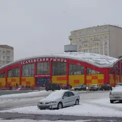

У метро · ЦАО
Куда сходить у метро «Спортивная»
Для 7 мест из нашего каталога ближайшая станция — «Спортивная» (ЦАО): 2 культурных места, 2 ресторана или кафе, 1 развлечение и 1 театр. Например, «Новодевичий монастырь», «Новодевичьи пруды» и «Усачёвский рынок». Недорогих, примерно до 1 500 ₽ на человека, — 4. 5 готовых планов проходят через эту станцию — например, «Матч в Лужниках и рынок», с маршрутом пешком между точками.
- 7 мест
- 5 планов
Места у метро «Спортивная» 7
Новодевичий пр., 1
Ансамбль XVI–XVII веков над прудом — одна из самых красивых панорам Москвы.
Подробнее и маршрут: Новодевичий монастырьПозвать сюда: Новодевичий монастырь
Фото: Ivtorov, CC BY-SA 4.0 · Wikimedia Commons
Новодевичий пр., Москва
Пруды у стен Новодевичьего монастыря — одна из самых красивых прогулок в Москве.
Подробнее и маршрут: Новодевичьи прудыПозвать сюда: Новодевичьи пруды
Фото: Uwe Brodrecht, CC BY-SA 2.0 · Wikimedia Commons

ул. Усачёва, 26
Фермерские прилавки, фудкорт с проектами известных рестораторов и веранда. 10:00–22:00.
Подробнее и маршрут: Усачёвский рынокПозвать сюда: Усачёвский рынок
Фото: Artem Svetlov, CC BY 4.0 · Wikimedia Commons
Большой Саввинский пер., 12, стр. 2
Тосканская кухня в старом особняке у Девичьего поля, книжные полки и летний патио. 12–00.
Большой Саввинский пер., 12, стр. 10Г
Новое
Караоке Эмина Агаларова в «Московском шёлке»: сцена с акустикой Meyer Sound, резидентки-вокалистки и шоу между песнями. Девичник с размахом, до 6 утра.
Лужнецкий пр., 2
Музей под открытым небом у стен Новодевичьего монастыря: здесь похоронены Гоголь, Булгаков, Чехов и сотни известных людей. Тихие аллеи, особенно красиво осенью.
Подробнее и маршрут: Новодевичье кладбищеПозвать сюда: Новодевичье кладбище
ул. Большая Пироговская, 53/55
Новое
Камерный театр музыки и поэзии в бывшем кинотеатре «Спорт»: спектакли-концерты, где песни и стихи звучат на равных, — например, вечер по песням Окуджавы.
Подробнее и маршрут: Театр Елены КамбуровойПозвать сюда: Театр Елены Камбуровой


Готовые планы 5
- Лужники · Стадион · м. Воробьёвы горы
- 27 минут пешкомУсачёвский рынок · Рынок и фудкорт
Дневной матч в Лужниках (расписание — на сайте стадиона), а потом около получаса пешком до Усачёвского рынка: на фудкорте каждый выберет своё, открыт до 22:00.
Открыть план: Матч в Лужниках и рынокПозвать сюда: Матч в Лужниках и рынок
Фото: mos.ru, CC BY 4.0 · Wikimedia Commons
- Новодевичий монастырь · Монастырь · м. Спортивная
- 5 минут пешкомНоводевичье кладбище · Некрополь
Стены Новодевичьего над прудом, потом тихий некрополь с надгробиями Гоголя, Булгакова и Чехова.
Открыть план: Монастырь и некропольПозвать сюда: Монастырь и некрополь
Фото: Ivtorov, CC BY-SA 4.0 · Wikimedia Commons
- Новодевичий монастырь · Монастырь · м. Спортивная
- 3 минуты пешкомНоводевичьи пруды · Парк
- 17 минут пешкомABC Coffee Roasters · Кофейня
Стены и башни монастыря отражаются в пруду, вокруг жёлтые ивы. Согреться — кофе в ABC на Усачёва.
Открыть план: Новодевичий в листопадПозвать сюда: Новодевичий в листопад
Фото: Ivtorov, CC BY-SA 4.0 · Wikimedia Commons
- Новодевичьи пруды · Парк · м. Спортивная
- 14 минут пешкомBistrot · Итальянский ресторан
Одна из самых красивых прогулок в Москве — у стен монастыря на закате, а потом тосканский ужин в старом особняке у Девичьего поля.
Открыть план: Новодевичьи пруды и BistrotПозвать сюда: Новодевичьи пруды и Bistrot
Фото: Uwe Brodrecht, CC BY-SA 2.0 · Wikimedia Commons
Тосканский ужин в особняке Bistrot, а через пару минут — Divas в «Московском шёлке»: сцена с акустикой Meyer Sound, резидентки-вокалистки и шоу до 6 утра.
Открыть план: Тоскана и караоке с размахомПозвать сюда: Тоскана и караоке с размахом

Как позвать
- Выбери план, место или событие — в карточке адрес, цены и маршрут в Яндекс Картах.
- Нажми «Позвать сюда» — соберётся приглашение-игра для свидания или голосование для компании.
- Отправь ссылку в любой мессенджер: тебе ответят, а компания отметит, куда и когда может. Бесплатно и без регистрации.